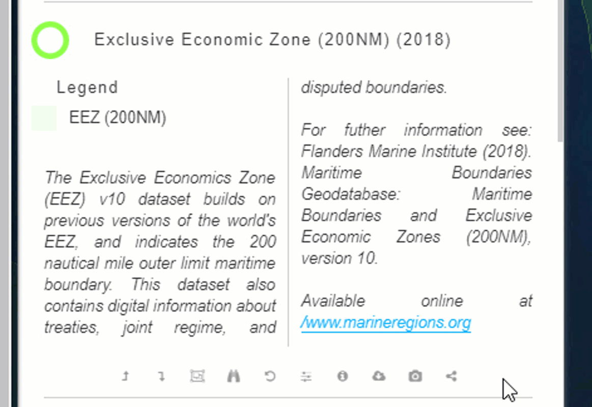
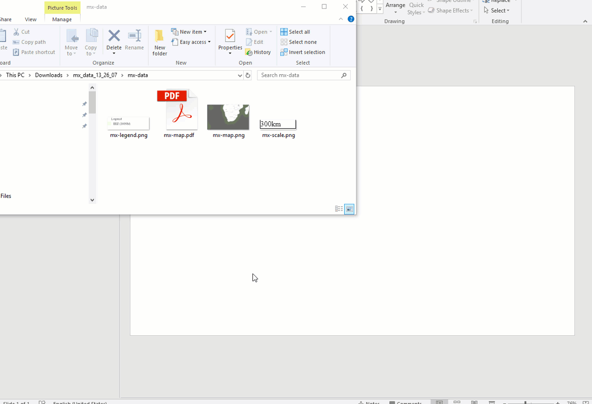
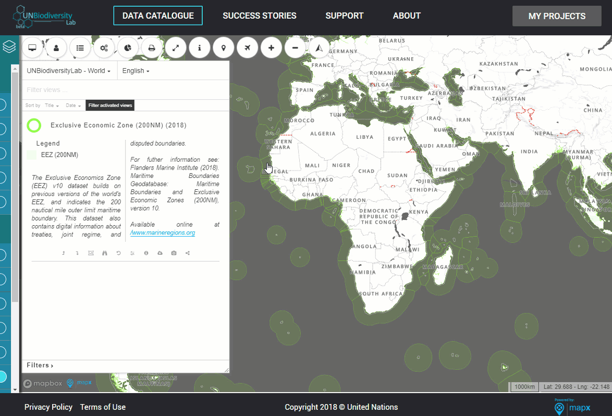
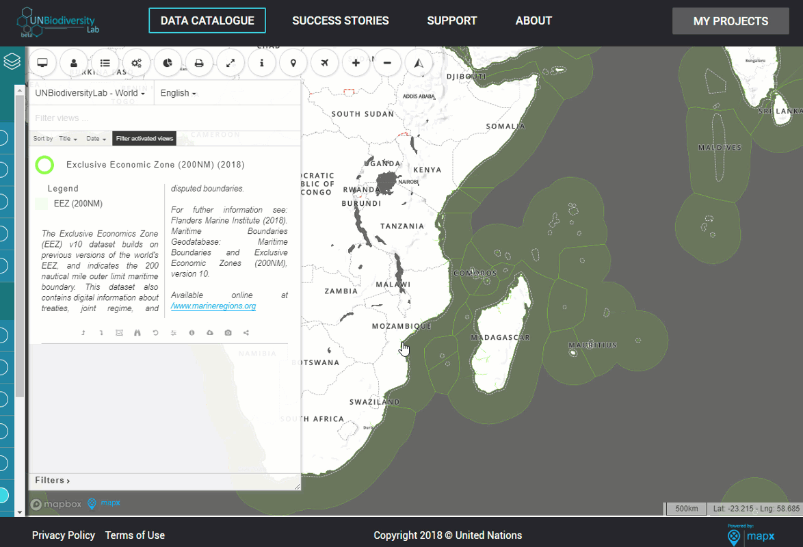
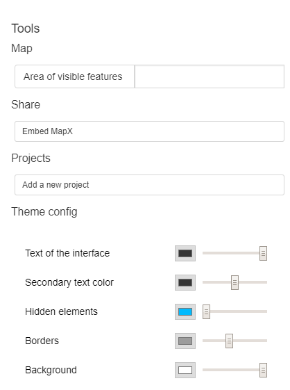
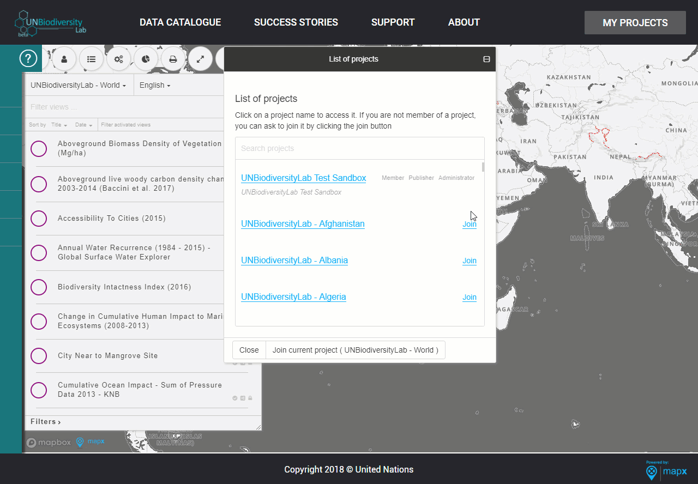

Public Data Catalogue
-
How do I register or log-in?

Before you begin exploring the data, register for the UN Biodiversity Lab.
- Click the log-in icon in the top right corner of the toolbar and enter your email.
- You will receive a one-time use code via email. To keep your information secure, a randomly generated one-time code is how you will always log-in to the UN Biodiversity Lab. You should receive an email immediately from bot@mapx.org.
- Enter this code into the website and you are officially logged in. Using the data catalogue as a registered user gives you access to more datasets and functions, including the ability to download data.
- Adjusting the language and region
- How do I find data?
- How do I adjust the menus?
- What do the button colors mean?
- How do I layer the views?
- The View Toolbar
- How can I download the data?
-
How do I make a map?

Making maps is a critical element of using the UN Biodiversity Lab, and it can be done in two ways. Once you have the correct view in place, click the “Take a screenshot” button to automatically begin a download of a zip file to your computer. This zip file will contain 4 elements: 3 png’s with the scale, map, and legend, and 1 PDF with all of the elements combined.
The PDF output is still in development, so for now we recommend arranging the elements yourself, on a program such as Powerpoint, to include into reports or publications.

If you have multiple views visible, only the legend that you click “Take a Screenshot” underneath will be included in the zip file. You can take a screenshot of the others by using a selective screenshot tool on your computer such as the Windows Snipping Tool.
You can lay aerial imagery on your map using the plane button. If you would simply like to take a screenshot of the view with no auxiliary information, you can click the print button along the top toolbar. An automatic download will begin of a PNG of only the map that is shown within the frame.
- Sharing views
- Reset bearing
-
Toolbox features

The toolbox button in the top toolbar is where you can find additional tools, as well as customizing and styling options for your map. At the very bottom of the toolbox, under theme configuration, you can adjust the colours of your map, including the text, boundaries, and other elements which may come in useful when generating maps.
The “Embed MapX” button has the same features and options as the “Share View” button in the View toolbar. Links can be returned as an iframe or a direct link to the view within MapX.

At the top of the toolbox, the “Area of Visible Features” button will return the values of the vector features (polygons) visible in your view. This will only work with vector data. The area calculation, in square kilometers, is the total area (land or sea) in the features that are visible within the frame of the map.
- Overlap Analysis
6NR National Projects
-
Project configuration

Only administrators have the ability to modify the settings and parameters of the 6NR national projects. To configure the settings of your project, navigate to “Project configuration” in the Toolbox in order to set the description, initial position of the map, and user accessibility of your project.
Do not change the title of your project. You can change the description of your project which will be publicly viewable. To set the position of the map that your project will open to, click “Initial Map Position” and zoom in to the the chosen area and click “Use current map parameters.” You can highlight specific countries by selecting the country name(s) in the “Countries to be highlighted on the map” section. If it is not already set, this should be your 6NR country. If you would like your project to be public, check the box next to “This project is public.” This checkbox is important - it decides whether this project will be public or not. This means that your project can be searched by anyone under the “list of projects” and that views that have public access within it will be visible.
- Invite Members and Define Roles
- How can I share a project?
-
How do I add views or delete views from my project?

Your 6NR .gifprojects are already pre-populated with views. If you would like to delete unnecessary views, navigate to the Toolbox within your project and select “Manage External Views” under “Project Configuration”. Delete the views you would like to remove.
If you accidentally delete a view that you would still like in your project, it is simple to add it back into your project. Navigate back to the Data Catalogue and find the view. Click the “Share” button beneath the view of your choice, and enter the name of your project(s) in the field and select “Add view to selected project(s)”. The save icon indicates that it has been sent to your project.
- How can I upload data?
- Manual upload
- Drag and drop upload
- Styling a vector view